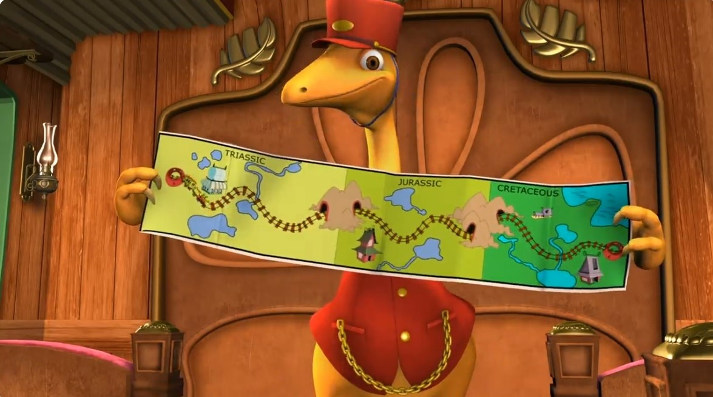
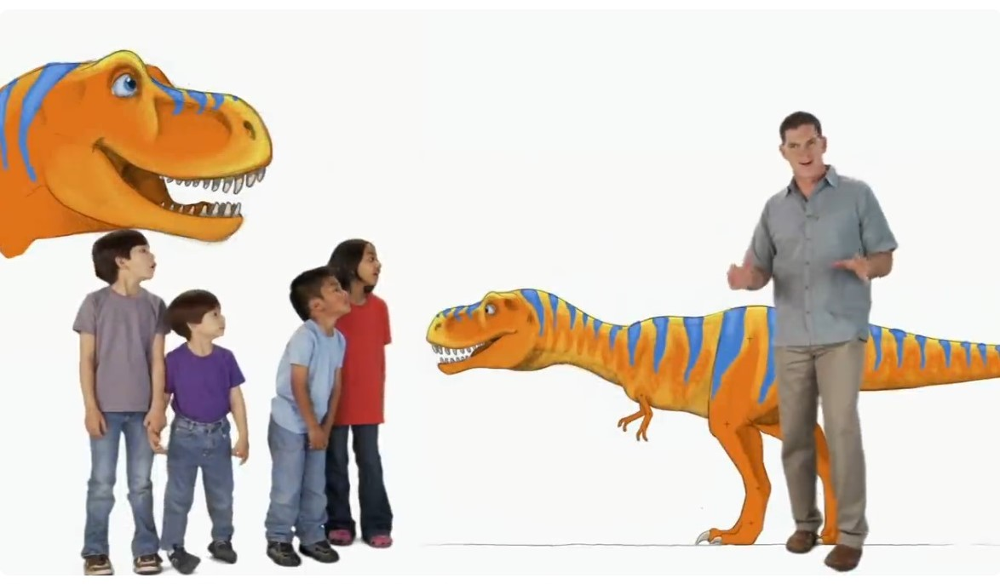
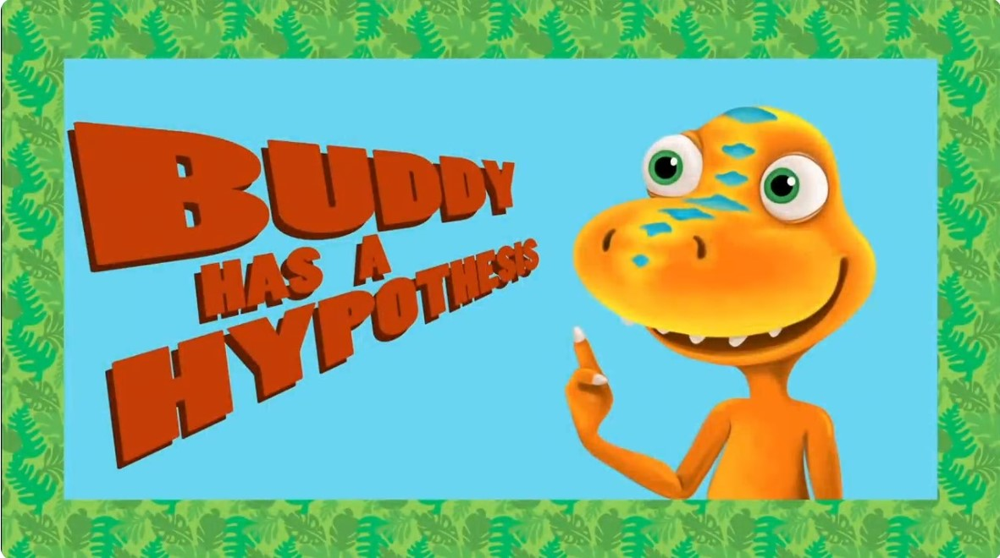

Οι μαθήτριες και οι μαθητές που το 2012 πήγαιναν στις πρώτες τάξεις του Δημοτικού Σχολείου, πιθανότατα θα θυμούνται την εκπομπή της ΕΤ1 με τον τίτλο “Το Τρένο των Δεινοσαύρων”.
Το τρένο των δεινοσαύρων, περνώντας μέσα από την σήραγγα του χρόνου, ταξίδευε σε διαφορετικές γεωλογικές περιόδους και η εκπομπή παρουσίαζε μερικά από τα είδη των δεινοσαύρων που ζούσαν σε εκείνες τις γεωλογικές περιόδους.
Επιστημονικός υπεύθυνος της εκπομπής ήταν ο Παλαιοντολόγος Δόκτωρ Σκοτ ο οποίος, με εξαιρετικά απλό και προσιτό τρόπο, έδινε επιστημονικές πληροφορίες για τα διαφορετικά είδη των δεινοσαύρων που παρουσίαζε η εκπομπή.
Ένα από τα ιδιαίτερα χαρακτηριστικά της εκπομπής ήταν η φράση “Κάνω μια Υπόθεση” όπου ο Μπάντυ, ο πρωταγωνιστής δεινόσαυρος της σειράς, έκανε επιστημονικές υποθέσεις (ιδέες που μπορείς να ελέγξεις, όπως έλεγαν οι φίλοι του) και στη συνέχεια προσπαθούσε να βρει επαρκή στοιχεία προκειμένου να διαπιστώσει εάν ίσχυε ή εάν δεν ίσχυε η επιστημονική υπόθεση που είχε κάνει.
Δώδεκα χρόνια μετά, οι τότε μαθήτριες και μαθητές είναι πιθανότατα φοιτήτριες και φοιτητές σήμερα και ίσως να έχουν ξεχάσει εκείνη την εκπομπή. Κι όμως, η φράση “Κάνω μια Υπόθεση” είναι ένα αναπόσπαστο κομμάτι σχεδόν όλων των επιστημών και ο “Έλεγχος Υποθέσεων” (Hypothesis Testing) είναι μία τεχνική με την οποία προάγεται η επιστημονική γνώση.
Ας δούμε όμως ένα απλό παράδειγμα. Σε κάποια λοιπόν πόλη της Ελλάδας, μερικοί μαθητές διαφωνούν για το εάν το 3ο Λύκειο της πόλης τους έχει καλύτερους μαθητές από το 1ο Λύκειο της πόλης τους.
Πώς λοιπόν θα μπορούσαμε να αποφασίσουμε ποιο από τα δύο Λύκεια έχει καλύτερους μαθητές; Απλά, θα μπορούσαμε να πάρουμε όλες τις βαθμολογίες των μαθητών από τα δύο αυτά Λύκεια και να τις συγκρίνουμε. Αυτό όμως είναι κάτι το ανέφικτο, διότι απλούστατα δεν έχουμε πρόσβαση σε αυτές τις βαθμολογίες και ως εκ τούτου, δεν μπορούμε να τις συγκρίνουμε.
Τι κάνουμε λοιπόν; Απλά, κάνουμε μια υπόθεση και υποθέτουμε ότι ο γενικός μέσος όρος βαθμολογίας των μαθητών στα δύο αυτά Λύκεια είναι ίδιος. Δηλαδή, υποθέτουμε ότι δεν υπάρχουν διαφορές ανάμεσα στον γενικό μέσο όρο βαθμολογίας των μαθητών του 3ου Λυκείου συγκριτικά με τον γενικό μέσο όρο βαθμολογίας των μαθητών του 1ου Λυκείου. Αυτή λοιπόν την υπόθεση την ονομάζουμε “Μηδενική Υπόθεση” (Null Hypothesis) διότι υποθέτει ότι δεν υπάρχουν διαφορές ανάμεσα στις βαθμολογίες ή με άλλα λόγια, ότι οι διαφορές είναι μηδέν, και την συμβολίζουμε ως H0.
Την Μηδενική Υπόθεση όμως, θα πρέπει με κάτι να την συγκρίνουμε και έτσι μαζί με την Μηδενική Υπόθεση κάνουμε πάντοτε και μία “Εναλλακτική Υπόθεση” (Alternative Hypothesis) στην οποία υποθέτουμε ότι η διαφορά του γενικού μέσου όρου βαθμολογίας των μαθητών στα δυο αυτά Λύκεια είναι διαφορετική από το μηδέν, δηλαδή, ότι όντως υπάρχει διαφορά ανάμεσα στους γενικούς μέσους όρους βαθμολογίας των μαθητών των δύο αυτών Λυκείων, και την υπόθεση αυτή την συμβολίζουμε με H1.
Αν θεωρήσουμε λοιπόν ότι ο γενικός μέσος όρος βαθμολογίας όλων των μαθητών του 3ου Λυκείου είναι μ3 και ότι ο αντίστοιχος γενικός μέσος όρος βαθμολογίας των μαθητών του 1ου Λυκείου είναι μ1, τότε μπορούμε να εκφράσουμε την Μηδενική και την Εναλλακτική υπόθεση που κάναμε ως εξής:
H0: μ3 = μ1
(το οποίο βεβαίως γράφεται και ως μ3-μ1=0, εξ ου και η ονομασία “Μηδενική Υπόθεση”)
Η1: μ3 ≠ μ1
(το οποίο βεβαίως γράφεται και ως μ3-μ1 ≠ 0)
Με δυο λόγια, στην μηδενική υπόθεση ελέγχουμε πάντοτε το ίσον με το μηδέν ενώ στην εναλλακτική υπόθεση ελέγχουμε πάντοτε το διαφορετικό από το μηδέν.
Δηλαδή, στην μηδενική υπόθεση ελέγχουμε πάντοτε ότι δεν υπάρχουν διαφορές ενώ στην εναλλακτική υπόθεση ελέγχουμε πάντοτε την ύπαρξη διαφορών.
Βέβαια εμείς θέλουμε να δούμε ποιο από τα δύο Λύκεια έχει την καλύτερη βαθμολογία αλλά όμως, σε αυτό το στάδιο περιοριζόμαστε αποκλειστικά και μόνο στο αν όντως υπάρχουν διαφορές ή όχι ανάμεσα στα δύο Λύκεια και εάν τυχόν βρούμε ότι υπάρχουν διαφορές, τότε στο επόμενο στάδιο θα πούμε ποιο από τα δύο Λύκεια είναι καλύτερο.
Και για να το πούμε πιο γενικά, με την μηδενική και την εναλλακτική υπόθεση ελέγχουμε εάν υπάρχουν ή δεν υπάρχουν διαφορές και στη συνέχεια, μόνον εφόσον διαπιστώσουμε ότι όντως υπάρχουν διαφορές, τότε μόνον προχωρούμε στο επόμενο στάδιο προκειμένου να δούμε ποιες είναι αυτές οι διαφορές.
Ωραία, και τώρα που φτιάξαμε την μηδενική υπόθεση και την εναλλακτική υπόθεση, τι ακριβώς κάνουμε; Μα απλούστατα θα τις ελέγξουμε προκειμένου να βγάλουμε τα συμπεράσματα μας. Γι αυτόν ακριβώς τον λόγο, η διαδικασία αυτή ονομάζεται “Έλεγχος Υποθέσεων” (Hypothesis Testing).
Θέλετε λοιπόν να δείτε με ποιον τρόπο θα ελέγξουμε τις δύο υποθέσεις H0 και H1 που μόλις δημιουργήσαμε;
Μείνετε συντονισμένες, μείνετε συντονισμένοι, κι ελέγξτε ξανά σε λίγες ημέρες την σελίδα των περιεχομένων…
Σελίδα Περιεχομένων